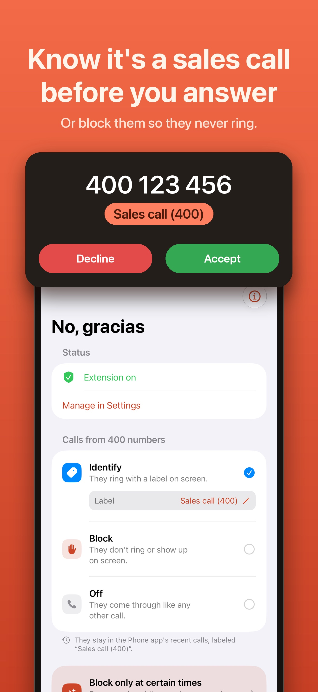
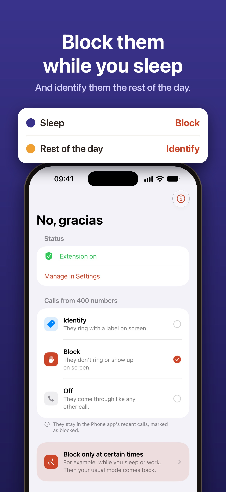
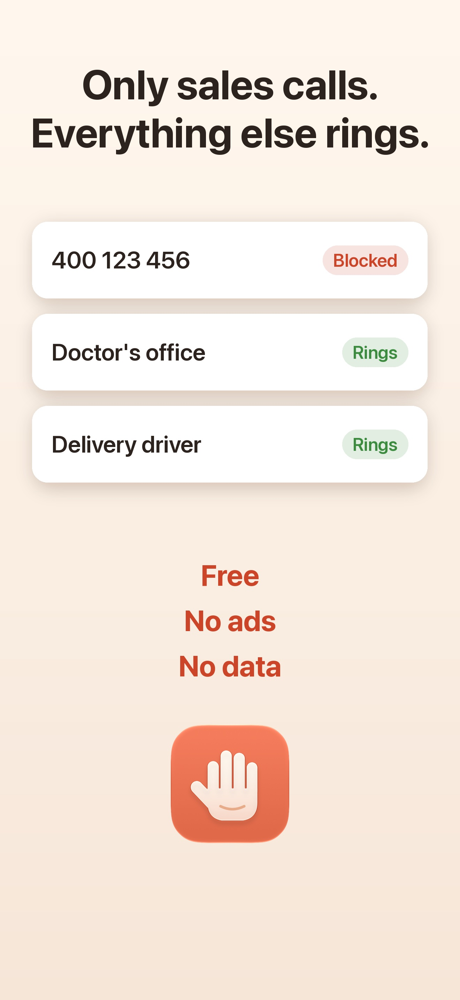

Press
Everything you need to write about «No, gracias». You're free to use the text, screenshots and icon.
In short
«No, gracias» is a free iPhone app that identifies or blocks Spanish sales calls from the 400 prefix, mandatory in Spain since 17 October 2026. It has no ads or accounts and collects no data: everything happens on the iPhone.
Facts
- Name: No, gracias
- Developer: Oswaldo Rubio, independent iOS developer
- Launch: 7 November 2026 (Spanish App Store)
- Price: free, no ads, no subscription or paid version. Optional tips that unlock nothing.
- Requirements: iPhone with iOS 18 or later
- Languages: Spanish, Catalan, Basque, Galician and English
- Privacy: no servers, accounts, analytics or tracking
- App Store: apps.apple.com/es/app/id6830892528
What it does
- Identify: the call rings, but the screen shows "Sales call (400)" so you can decide whether to answer.
- Block: 400 calls don't ring or show up, and the caller doesn't know.
- Automatic: block while you sleep or work with Focus filters, Control Center, Siri or Shortcuts.
- Exceptions: specific 400 numbers that always ring, such as your bank or insurer.
- SMS filter: hides carrier notices about 400 calls that were already blocked.
The story
Since 17 October 2026, sales calls in Spain must come from numbers starting with 400. The rule makes them recognisable, but doesn't stop them: they still ring. The existing alternatives charged to block them or showed ads.
Oswaldo Rubio, an iOS developer, built «No, gracias» to solve it for free and without collecting data. The first version went from idea to working app in under 24 hours, built with the help of Claude, Anthropic's AI assistant. Since then it has added automation, exceptions, an SMS filter and five languages, including Basque and Galician, which are rare in utility apps.
Media kit
- Icon (1024 × 1024): light · dark
- App Store screenshots (1320 × 2868): identify · block while you sleep · only sales calls
- App screenshots: identify · block · automate
- Social image (1200 × 630): og/en.png


Contact
For interviews or any details: info@nogracias.app.


